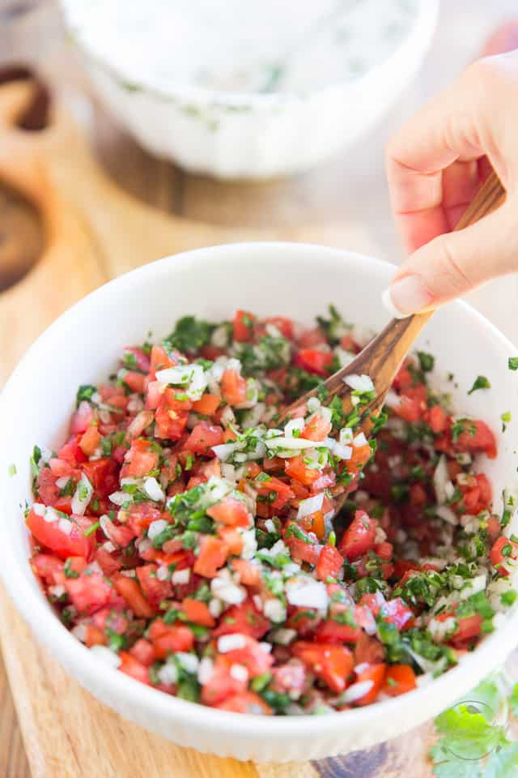

Classic Pico de Gallo

Ingredients
- 4 cups diced red tomatoe
- 1 cup chopped white onion
- 2 medium jalapeño peppers
- 1/2 cup fresh cilantro
- 1/4 cup lime juice
- 1 tsp. salt
Directions
- Combine the chopped onion, jalapeño peppers, cilantro, lime juice and salt together in a medium mixing bowl. Set that aside to marinate while you seed and dice the tomatoes.
- Once all the tomatoes have been diced, place in the bowl with the rest of the ingredients and stir delicately until well combined.
- Place your pico de gallo in the fridge to marinate for at least 15 minutes or up to several hours to allow flavors to fully develop.
- Transfer to serving bowl with the help of a slotted spoon to leave excess liquid behind.
- Pico de gallo is best eaten fresh but will keep well in the refrigerator for up to a few days.
Full Recipe Here
Contact Me
Send me an Email
The University of Montana
32 Campus Dr
Missoula, MT 59812